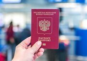
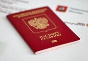
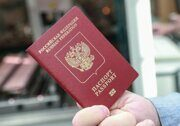
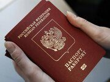
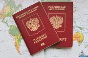
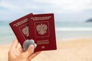
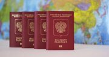
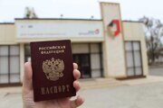
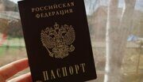
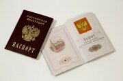

|
В статье подробно рассмотрены пошаговые действия и рекомендации для решения проблемы утраты загранпаспорта за рубежом, включая взаимодействие с полицией и консульскими учреждениями. Четкий алгоритм действий и полезные советы помогут вам быстро разобраться в сложной ситуации и вернуться домой без лишних задержек.
Узнайте, как россиянам получить разрешение на въезд в Финляндию в 2025 году, и какие документы для этого понадобятся. Подробное руководство поможет вам избежать ошибок и успешно завершить оформление.
В этой статье мы подробно рассказываем, как быстро и удобно узнать о готовности загранпаспорта. Вы найдете практические советы, подробные инструкции и ответы на часто задаваемые вопросы, чтобы быть полностью готовыми к получению своего документа.
Узнайте все тонкости въезда в Польшу для россиян в 2025 году: от выбора оптимального маршрута до сбора необходимых документов. В статье вы найдете пошаговые рекомендации и полезные советы, которые помогут подготовиться к поездке без лишних хлопот.
Узнайте, какие преимущества предлагают новые биометрические загранпаспорта по сравнению с документами старого образца, и выберите оптимальный вариант для ваших нужд в 2025 году. Сравнение сроков, стоимости оформления и дополнительных возможностей поможет сделать правильный выбор для любых путешествий.
Подробное руководство по въезду в Литву в 2025 году для граждан России. Узнайте все тонкости, необходимые документы и практические советы, чтобы сделать вашу поездку безопасной и комфортной.
Не допускайте ошибок при оформлении загранпаспорта – узнайте, как быстро и без проблем подать документы в 2025 году. В статье вы найдете советы, реальные кейсы и подробную пошаговую инструкцию для успешной подачи заявления.
Узнайте, как россиянам в 2025 году попасть в закрытую Эстонию, соблюдая все актуальные требования и нюансы правил въезда. Читайте наш подробный гид, чтобы избежать подводных камней и подготовить документы правильно!
Получите подробное руководство по оформлению загранпаспорта для новорожденного в 2025 году, где мы обсудили все этапы, нюансы и частые вопросы. Обучитесь, как быстро и без лишних забот подготовить документы для безопасного международного путешествия!
Узнайте, как правильно оформить документы для въезда в Латвию для россиян в 2025 году с подробным описанием всех этапов. Статья предлагает практические советы и рекомендации для успешного прохождения визового контроля.
Узнайте, как в 2025 году с помощью современных технологий и четкого пошагового алгоритма через МФЦ можно быстро получить загранпаспорт. Эта статья подробно расскажет о всех этапах оформления и необходимых документах.
Узнайте, как грамотно подготовиться к поездке в Португалию для россиян в 2025 году, собрав все необходимые документы и следуя актуальным требованиям. Наша статья поможет избежать бюрократических ошибок и сделает ваше путешествие максимально комфортным!
В статье подробно рассказано, как оформить загранпаспорт в 2025 году без предоставления военного билета, с акцентом на необходимые документы и последовательность действий. Узнайте все нюансы процедуры и улучшите свои шансы на быстрое получение паспорта.
Узнайте, как россиянам успешно получить визу в США в 2025 году, соблюдая все актуальные требования и пошаговую инструкцию по сбору документов. В статье подробно описаны необходимые этапы подготовки, советы специалистов и актуальные изменения в визовой политике США.
Подготовьтесь правильно к фотосъемке для паспорта с нашим подробным руководством, в котором собраны все требования к фото на паспорт. Узнайте, как сделать идеальное фото, чтобы документы приняли с первого раза.
В 2025 году правила въезда в Мексику для россиян претерпели изменения, и важно знать все нюансы, чтобы избежать проблем на границе. Узнайте, какие документы необходимы, как оформить визы и что учесть перед поездкой.
В статье вы найдете подробное пошаговое руководство по оформлению загранпаспорта через «Госуслуги» в 2025 году, с ориентиром на актуальные изменения и советы экспертов. Узнайте, как правильно подготовить документы и ускорить процесс получения паспорта онлайн.
Узнайте все нюансы оформления документов, изменения визового режима и полезные советы для безопасного и комфортного въезда во Вьетнам в 2025 году. Эта инструкция для россиян поможет подготовиться к путешествию без лишних забот.
В статье подробно рассказано, какие документы и шаги необходимы для замены паспорта не по месту регистрации в 2025 году, а также приведены практические советы по организации процесса в другом городе или за границей. Узнайте, как избежать ошибок и сократить сроки получения нового паспорта, используя современные технологии и проверенные рекомендации.
Узнайте, какие визовые режимы и изменения в правилах въезда ждут россиян, планирующих поездку на Бали в 2025 году. Статья поможет разобраться в требованиях и подготовиться к путешествию без лишних забот.
Узнайте, как правильно внести запись о ребенке в паспорт в 2025 году, чтобы избежать бюрократических задержек и ошибок. Мы подготовили подробную инструкцию, которая поможет вам пройти этот процесс без лишних хлопот.
Полный гид для россиян по путешествию на Мальдивы в 2025 году: от правильного оформления документов и выбора рейсов до лайфхаков для незабываемого отдыха. Узнайте, как избежать ошибок и сделать свою поездку идеальной с нашим подробным руководством.
В статье рассматриваются все нюансы обновления фотографии в паспорте гражданина РФ без необходимости полной замены документа. Мы разберем, почему подобная процедура не предусмотрена законодательством и каковы возможные пути решения паспортных вопросов.
В статье представлены практические советы и рекомендации для российских туристов, позволяющие организовать въезд в Хорватию в 2025 году. Узнайте, как правильно подготовить документы, оформить визу и избежать возможных проблем в пути!
В статье представлено подробное пошаговое руководство по оформлению паспорта после развода в 2025 году, которое поможет избежать бюрократических трудностей. Узнайте все нюансы процедуры и получите практические советы для быстрого получения нового паспорта.
Узнайте, какие документы вам понадобятся для успешного въезда в Чехию в 2025 году.
Узнайте о заграничном паспорте для новорожденного – мифы и реальность, которые помогут родителям уверенно подойти к оформлению документа. В статье собраны проверенные советы и пошаговая инструкция для тех, кто хочет разобраться в тонкостях процедуры без лишних заблуждений.
Узнайте о новых правилах и требованиях для россиян, желающих посетить Словакию в 2025 году, чтобы ваше путешествие прошло гладко и без лишних хлопот.
В статье разбираются возможности и нюансы получения первого паспорта раньше установленного срока. Узнайте, какие условия необходимо выполнить для ускоренного оформления и какие риски могут возникнуть.
Узнайте, какие изменения ожидают российских туристов на Кипре в 2025 году – от новых визовых требований до обновленной инфраструктуры. Статья поможет подготовиться к путешествию и избежать бюрократических сложностей.
Узнайте, нужен ли штамп о гражданстве на свидетельстве о рождении для получения загранпаспорта для ребенка.
Узнайте, как подготовиться к поездке в Германию из России в 2025 году и избежать возможных ошибок при пересечении границы.
Узнайте, какие документы требуются для оформления загранпаспорта для взрослых и детей, а также куда их необходимо подать для быстрого получения паспорта. Паспортно-визовый центр «Север» с более чем 25-летним опытом работы в центре Москвы предлагает оперативное оформление и персональное сопровождение на всех этапах.
В статье рассматриваются ключевые изменения в правилах въезда во Францию для россиян в 2025 году. Узнайте, какие новые требования и нюансы нужно учитывать, чтобы успешно оформить документы для поездки.
В статье мы рассматриваем, как биометрический паспорт меняет правила игры в сфере международных путешествий, обеспечивая безопасность и упрощая процесс пересечения границ. Узнайте, почему этот документ станет ключом к вашему комфортному и безопасному путешествию.
Какие изменения ожидают россиян при въезде в Болгарию в 2025 году: новые правила, документы и советы для комфортного путешествия.
Узнайте, по каким причинам может быть аннулирован загранпаспорт, и как избежать проблем при планировании поездок за границу.
Планируете поездку в ОАЭ в 2025 году? Узнайте все о новых правилах въезда для граждан России: визовые требования, необходимые документы и актуальные рекомендации.
Вам исполнилось 45 лет? Узнайте, как быстро и без проблем заменить паспорт гражданина РФ — пошаговая инструкция с учетом всех нюансов и возможных сложностей.
Узнайте, какие правила и требования ожидают россиян, планирующих поездку в Израиль в 2025 году. Эта статья поможет вам подготовиться к путешествию и избежать возможных сложностей.
Узнайте, как оформить биометрический загранпаспорт в Москве в 2025 году: пошаговая инструкция, список документов и полезные советы для быстрого получения.
Планируете отдых в Черногории в 2025 году? Разбираемся, какие документы нужны для въезда, как получить визу (если потребуется) и какие подводные камни могут встретиться на пути.
Возможно ли иметь два заграничных паспорта одновременно? В этой статье мы разберем все нюансы получения и использования двух загранпаспортов, а также расскажем о ситуациях, когда это может быть необходимо.
 В 2025 году россияне смогут посетить Грецию, но для этого им необходимо быть в курсе актуальных требований к документам. Узнайте полный список необходимых бумаг для беззаботного путешествия! В 2025 году россияне смогут посетить Грецию, но для этого им необходимо быть в курсе актуальных требований к документам. Узнайте полный список необходимых бумаг для беззаботного путешествия!
Оформление заграничного паспорта может вызвать множество вопросов, особенно когда дело касается документов. Узнайте, можно ли получить загранпаспорт без трудовой книжки и какие альтернативы существуют.
Собираетесь в Италию? Разбираемся, какой заграничный паспорт необходим для въезда в страну и какие документы нужно подготовить для беззаботного путешествия.
Получите заграничный паспорт быстро и без лишних хлопот! Узнайте, как портал Госуслуг упростит процесс оформления и сэкономит ваше время.
Планируете поездку в Испанию в 2025 году? Узнайте из нашей статьи актуальные правила въезда для граждан России, подготовленные нашими экспертами.
Пропустили срок замены паспорта в 20 лет? Разберемся, какие последствия вас ожидают и как исправить ситуацию, избежав штрафов и других неприятностей.
Собираетесь в Египет? Разберемся, нужен ли вам загранпаспорт для поездки и какие документы обязательно нужно взять с собой, чтобы избежать проблем на границе.
В статье рассматривается возможность получения заграничного паспорта по доверенности, а также основные нюансы и требования, связанные с этой процедурой.
Перед поездкой в Турцию важно знать все нюансы получения загранпаспорта и необходимых документов. В этой статье мы расскажем, как правильно подготовиться к путешествию и избежать распространенных ошибок.
Изменилась фамилия после свадьбы? Узнайте, как быстро и без проблем поменять паспорт в соответствии с новым семейным положением. В нашей пошаговой инструкции — все необходимые документы и этапы процедуры. Повредили паспорт гражданина РФ и не знаете, что делать? Узнайте, как быстро и без лишних хлопот восстановить главный документ, следуя нашему пошаговому руководству.
Узнайте все тонкости въезда в Таиланд для граждан России: какие визы необходимы, какие документы нужно подготовить и как избежать распространенных ошибок.
Потеря заграничного паспорта может стать серьезной проблемой, но не стоит паниковать. В нашей инструкции вы найдете пошаговое руководство по восстановлению документа и советы по предотвращению подобных ситуаций в будущем.
 Вас не пускают за границу, несмотря на наличие загранпаспорта? Узнайте о причинах запрета на выезд и доступных способах решения этой проблемы в нашей статье. Мы расскажем, как действовать, какие документы нужны и куда обращаться, чтобы восстановить право на выезд за пределы России. Вас не пускают за границу, несмотря на наличие загранпаспорта? Узнайте о причинах запрета на выезд и доступных способах решения этой проблемы в нашей статье. Мы расскажем, как действовать, какие документы нужны и куда обращаться, чтобы восстановить право на выезд за пределы России.
Пенсия и загранпаспорт: разбираемся в особенностях оформления и необходимых документах.



  


 

|
Отзывы клиентов

Очень замечательные сотрудники.отзывчивые.забрал свой заветный документ.спасибо огромнейшее!...
Все сделали вовремя, благодарю. Отдельное спасибо Григорию за понимание и помощь в моей нестандартной ситуации.
Большое спасибо. Сделали всё как и обещали. Цена приемлемая, работа проведена оперативно. С удовольствием обратимся к Вам снова, и посоветуем своим друзьям.
Статьи
Новости
03.06.25

Литва перестала признавать небиометрические загранпаспорта граждан России
03.02.25

Правительство России поддержало ужесточение ответственности за несообщение сведений о себе в военкомат при переезде
29.07.24

Россияне не смогут вернуть себе уплаченную госпошлину
24.07.24

Чехия предложила запретить въезд в ЕС россиянам без биометрических паспортов